1004E10 ENGINE, REMOVED - REMOVE CYLINDER HEAD AND OIL SUMP FOR INSPECTION - INCLUDES POSITIONING ON STAND AND REMOVAL
- Path
- Procedures > 10 ENGINE > 1004 ENGINE AND POWER UNIT > 1004E ENGINE ASSEMBLY INSPECTION AND REPAIRS > 1004E10 ENGINE, REMOVED - REMOVE CYLINDER HEAD AND OIL SUMP FOR INSPECTION - INCLUDES POSITIONING ON STAND AND REMOVAL
- Kind
- repair procedure (removal / refitting; the operation number is the code)
- Applies to
- all engines; all production periods
- Interactive page
- https://sloeber94.github.io/elrnDB-aBrrSpdr/en/#/946001792
Applies to: engines: 2.2 JTS; all production periods
 Removing
Removing
 Refitting
Refitting1. Undo the bolt (1a), loosen the band (1b) and remove the engine coolant pipe (1c).
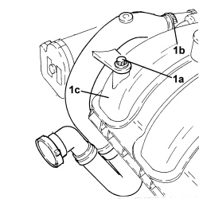
Applies to: engines: 2.2 JTS; all production periods
1. Undo the bolts (1a) and remove the engine oil dipstick tube (1b).
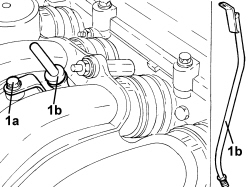
Applies to: engines: 2.2 JTS; all production periods
1. Undo the bolts (1a) and remove the intake chamber mounting bracket (1b).
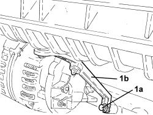
Applies to: engines: 2.2 JTS; all production periods
1. Loosen the bands and remove the intake chamber from the hoses.
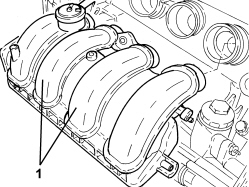
Applies to: engines: 2.2 JTS; all production periods
1. Undo the fastenings (1a) and remove the bracket (1b).
2. Loosen the bands (2a) and remove the water inlet and outlet pipes from the water-oil heat exchanger (2b).
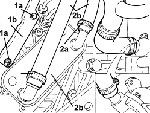
Applies to: engines: 2.2 JTS; all production periods
1. Disconnect the connectors (1a) and remove the fuel pipes (1b).
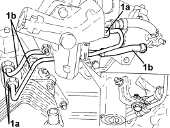
Applies to: engines: 2.2 JTS; all production periods
1. Undo the fastenings (1a) and remove the manifold (1b).
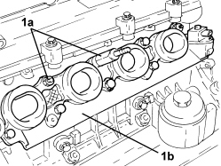
Applies to: engines: 2.2 JTS; all production periods
1. Undo the bolts (1a) and remove the ignition coil module (1b).
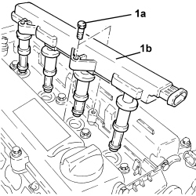
Applies to: engines: 2.2 JTS; all production periods
1. Undo the bolts (1a) and remove the cam cover (1b).
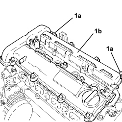
Applies to: engines: 2.2 JTS; all production periods
1. Undo the bolt fixing the power assisted steering pump bracket to the cylinder head.
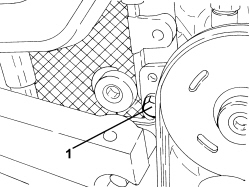
Applies to: engines: 2.2 JTS; all production periods
1. Undo the bolts (1a) and remove the phase transformer two solenoid valves (1b).
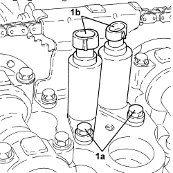
Applies to: engines: 2.2 JTS; all production periods
1. Undo the bolts (1a) and remove the timing chain upper pad (1b).
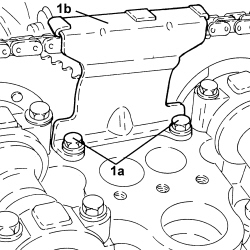
Applies to: engines: 2.2 JTS; all production periods
1. Undo the timing system hydraulic tensioner and remove it.
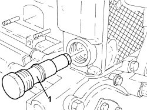
Applies to: engines: 2.2 JTS; all production periods
1. Undo the cap (1a) and undo the bolt securing the timing chain pad (1b).
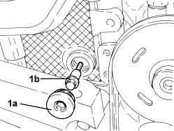
Applies to: engines: 2.2 JTS; all production periods
1. Applying counter-torque to the camshaft element, undo the bolt (1a) and remove the phase transformers (1b).
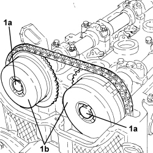
Applies to: engines: 2.2 JTS; all production periods
1. Undo the bolts (1a) and remove the cylinder head (1b) from the engine block.
- Remove the locating bushes from the cylinder block/crankcase.
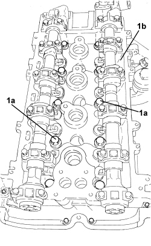
Applies to: engines: 2.2 JTS; all production periods
1. Release and remove the power assisted steering pump drive belt.
2. Use the tensioner (2a) to loosen the auxiliary belt (2b) and remove it.
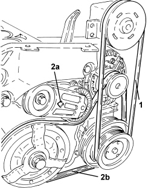
Applies to: engines: 2.2 JTS; all production periods
1. Undo the bolts (1a) and remove the air conditioner compressor (1b).
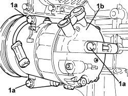
Applies to: engines: 2.2 JTS; all production periods
- Rotate the engine through 180° on the overhaul stand.
1. Undo the bolts (1a), remove the sealant at the points shown in the diagram and remove the sump (1b) from the lower crankcase.
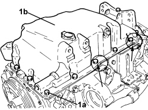
Applies to: engines: 3.2 JTS; all production periods
Op. 1004D40 ENGINE - POSITION ON STAND AND REMOVE
1. Undo the bolts and remove the power unit rigid support, timing side.
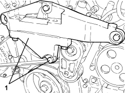
Applies to: engines: 3.2 JTS; all production periods
1. Adjust the belt tensioner to loosen and then remove the engine components drive belt.
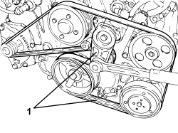
Applies to: engines: 3.2 JTS; all production periods
1. Undo the nut and remove the wiring from the alternator.
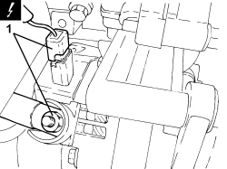
Applies to: engines: 3.2 JTS; all production periods
1. Undo the bolt (1a), the bolt (1b) fastening the alternator (1c) and remove it from the support.
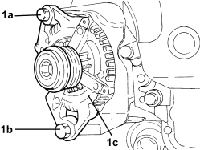
Applies to: engines: 3.2 JTS; all production periods
1. Undo the bolts (1a) and remove the alternator mounting (1b) from the engine crankcase.
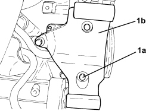
Applies to: engines: 3.2 JTS; all production periods
1. Undo the bolts (1a) and remove the right front engine lifting bracket (1b).
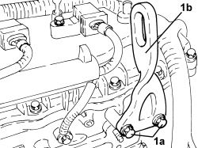
Applies to: engines: 3.2 JTS; all production periods
1. Undo the bolts (1a) and remove the power steering pump (1b) from the support.
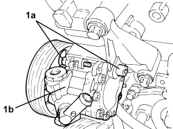
Applies to: engines: 3.2 JTS; all production periods
1. Undo the bolts (1a) and remove the power steering pump support (1b).
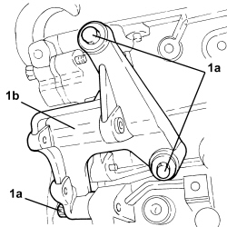
Applies to: engines: 3.2 JTS; all production periods
1. Disconnect the electrical connection for the air conditioning compressor.
Description | Connector | |
|---|---|---|
1 | Air conditioning compressor engagement electro-magnet | See L020 AIR CONDITIONING COMPRESSOR ENGAGEMENT ELECTRO-MAGNET |
2. Undo the bolts (2a) and remove the air conditioning compressor (2b) from the mounting.
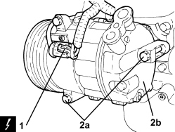
Applies to: engines: 3.2 JTS; all production periods
1. Undo the bolts (1a) and remove the air conditioner compressor mounting (1b).
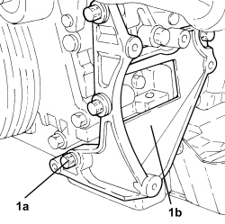
Applies to: engines: 3.2 JTS; all production periods
1. Undo the bolts (1a) and remove the left front engine lifting bracket (1b).
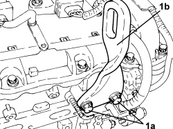
Applies to: engines: 3.2 JTS; all production periods
1. Disconnect the electrical connection for the pressure regulator on the pressure pump.
Description | Connector | |
|---|---|---|
1 | Fuel pressure regulator |
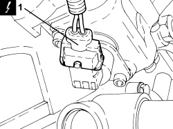
Applies to: engines: 3.2 JTS; all production periods
1. Disconnect the electrical connection for the fuel pressure sensor on the fuel manifold pipe.
Description | Connector | |
|---|---|---|
1 | Fuel pressure sensor |
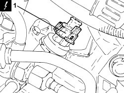
Applies to: engines: 3.2 JTS; all production periods
1. Disconnect the electrical connection for the fuel vapour solenoid valve.
Description | Connector | |
|---|---|---|
1 | Fuel vapour recovery solenoid valve |
2. Disconnect the electrical connection for the shut-off solenoid valve.
Description | Connector | |
|---|---|---|
2 |
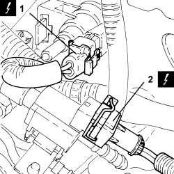
Applies to: engines: 3.2 JTS; all production periods
1. Disconnect the electrical connection for the absolute pressure sensor.
Description | Connector | |
|---|---|---|
1 | Absolute pressure sensor |
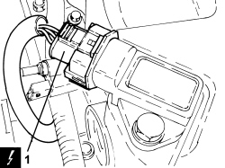
Applies to: engines: 3.2 JTS; all production periods
1. Disconnect the rapid connectors (1a) and remove the engine oil vapour recovery pipe (1b).
2. Undo the bolt (2a) and disconnect the earth lead (2b).
3. Disconnect the electrical connections for the right cylinder head ignition coils.
Description | Connector | |
|---|---|---|
3 | Ignition coil |
4. Release the fastening clips and remove the cable duct.
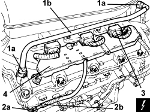
Applies to: engines: 3.2 JTS; all production periods
1. Undo the bolts (1a) and remove the bracket (1b) fastening the electrical wiring.
2. Disconnect the electrical connection for the right detonation sensor.
Description | Connector | |
|---|---|---|
2 | Detonation sensor - 2 |
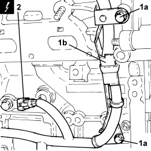
Applies to: engines: 3.2 JTS; all production periods
1. Disconnect the electrical connection for the engine oil level sensor.
Description | Connector | |
|---|---|---|
1 | Engine oil level sensor |
2. Disconnect the electrical connection for the engine rpm sensor.
Description | Connector | |
|---|---|---|
2 | Rpm sensor |
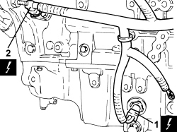
Applies to: engines: 3.2 JTS; all production periods
1. Disconnect the electrical connections for the left cylinder head ignition coils.
Description | Connector | |
|---|---|---|
1 | Ignition coil |
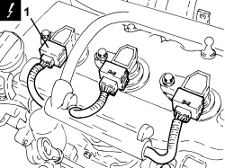
Applies to: engines: 3.2 JTS; all production periods
1. Disconnect the electrical connection for the engine coolant temperature sensor.
Description | Connector | |
|---|---|---|
1 | Engine coolant temperature sensor/sender unit |
2. Undo the bolt (2a) and disconnect the earth lead (2b).
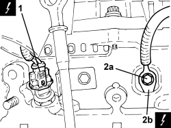
Applies to: engines: 3.2 JTS; all production periods
1. Disconnect the electrical connection for the left detonation sensor.
Description | Connector | |
|---|---|---|
1 | Detonation sensor - 2 |
2. Disconnect the electrical connection for the engine oil pressure warning light switch.
Description | Connector | |
|---|---|---|
2 | Insufficient engine oil pressure sensor |
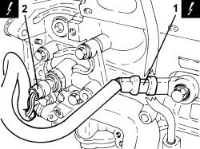
Applies to: engines: 3.2 JTS; all production periods
1. Disconnect the intermediate couplings for the engine electrical wiring.
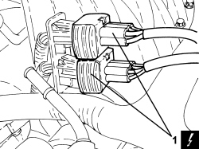
Applies to: engines: 3.2 JTS; all production periods
1. Disconnect the electrical connections for the left cylinder head phase transformer solenoids.
Description | Connector | |
|---|---|---|
1 | Inlet side phase transformer solenoid valve |
Description | Connector | |
|---|---|---|
1 | Exhaust side phase transformer solenoid valve |
2. Disconnect the electrical connections for the left cylinder head cam angle sensors.
Description | Connector | |
|---|---|---|
2 | Timing sensor |
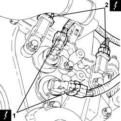
Applies to: engines: 3.2 JTS; all production periods
1. Disconnect the electrical connections for the right cylinder head phase transformer solenoids.
Description | Connector | |
|---|---|---|
1 | Inlet side phase transformer solenoid valve |
Description | Connector | |
|---|---|---|
1 | Exhaust side phase transformer solenoid valve |
2. Disconnect the electrical connections for the right cylinder head cam angle sensors.
Description | Connector | |
|---|---|---|
2 | Timing sensor |
3. Disconnect the electrical connection for the throttle casing.
Description | Connector | |
|---|---|---|
3 | Integrated throttle casing actuator |
4. Undo the bolt (4a) and disconnect the earth lead (4b).
5. Remove the engine wiring.
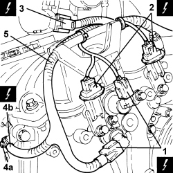
Applies to: engines: 3.2 JTS; all production periods
1. Undo the bolts (1a) and remove the air chamber assembly (1b).
- Remove the seals.
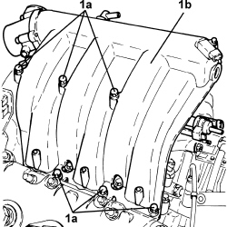
Applies to: engines: 3.2 JTS; all production periods
1. Undo the bolts (1a) and remove the ignition coils (1b).
2. Undo the bolts (2a) and remove the tappet covers (2b) complete with gaskets.
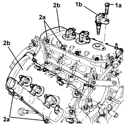
Applies to: engines: 3.2 JTS; all production periods
- Unscrew the spark plugs and remove them.
1. Undo the connectors (1a) and remove the high pressure pipe (1b) connecting the left and right fuel manifold pipes.
2. Undo the bolt fixing the pipe mounting bracket to the right cylinder head.
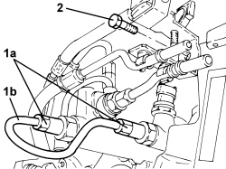
Applies to: engines: 3.2 JTS; all production periods
1. Release the intermediate couplings for the engine electrical wiring from the mounting bracket.
2. Undo the bolt (2a) and remove the mounting bracket (2b).
3. Undo the bolts (3a) and remove the water pump rigid inlet pipe (3b) complete with gaskets.
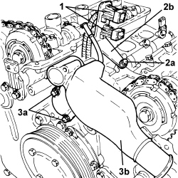
Applies to: engines: 3.2 JTS; all production periods
1. Fit the tool to be used for counter-torque for the bolt fixing the services pulley on the crankshaft.
Tool | Description | Function | Validity |
|---|---|---|---|
1860815000 | Flange | Loosen/ tighten the bolt fixing the services pulley on the crankshaft | 3.2 JTS 2.4 JTD 20V |
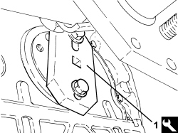
Applies to: engines: 3.2 JTS; all production periods
1. Undo the bolt fixing the services pulley on the crankshaft, using a spanner on the tool fitted previously for counter-torque.
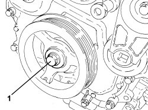
Applies to: engines: 3.2 JTS; all production periods
1. Using a universal extrator (1a) and reaction disc (1b), remove the services pulley on the crankshaft (1c).
Tool | Description | Function | Validity |
|---|---|---|---|
1845028000 | Reaction disc | Removing services pulley on crankshaft | 3.2 JTS |
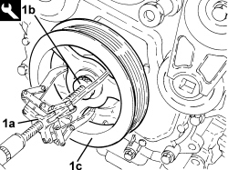
Applies to: engines: 3.2 JTS; all production periods
1. Undo the bolts (1a) and remove the engine components single belt moving tensioner (1b).
Applies to: engines: 3.2 JTS; all production periods
- Undo the bolts fixing the water pump pulley using the tool for counter-torque.
Tool | Description | Function | Validity |
|---|---|---|---|
1870815000 | Counter-torque | Loosen/ tighten the nut fixing the right front wheel hub to the axle shaft Loosen/ tighten bolts securing the water pump |
- Remove the water pump pulley.
- Remove the spacer.
Applies to: engines: 3.2 JTS; all production periods
1. Undo the bolts (1a) and remove the phase transformer solenoids (1b) from the left and right cylinder heads.
Applies to: engines: 3.2 JTS; all production periods
1. Undo the bolts (1a) and remove the engine front cover (1b) complete with oil seal (1c) water pump and cam angle sensors.
Applies to: engines: 3.2 JTS; all production periods
- Working at the bench, remove the oil seal from the engine front cover.
1. Undo the bolts (1a) and remove the hydraulic tensioner (1b) for the right cylinder head secondary timing chain.
2. Undo the bolt (2a) and remove the moving pad (2b).
3. Undo the bolts (3a) and remove the fixed pad (3b).
4. Remove the right cylinder head secondary timing chain.
Applies to: engines: 3.2 JTS; all production periods
1. Undo the bolts (1a) and remove the primary timing chain hydraulic tensioner (1b).
2. Undo the bolts (2a) and remove the fixed pad (2b) and the lower pad.
3. Remove the primary timing chain.
Applies to: engines: 3.2 JTS; all production periods
1. Undo the bolts (1a) and remove the hydraulic tensioner (1b) for the left cylinder head secondary timing chain.
2. Undo the bolt (2a) and remove the moving pad (2b).
3. Undo the bolts (3a) and remove the fixed pad (3b).
4. Remove the left cylinder head secondary timing chain.
Applies to: engines: 3.2 JTS; all production periods
1. Release the engine oil dipstick and remove it.
2. Undo the bolt (2a) and remove the engine oil dipstick tube (2b).
Applies to: engines: 3.2 JTS; all production periods
1. Undo the bolts (1a) and remove the phase transformers (1b) for the left cylinder head.
Applies to: engines: 3.2 JTS; all production periods
1. Undo the bolts (1a), (1b) and remove the left cylinder head.
- Remove the left cylinder head gasket.
- Remove the locating pins.
Applies to: engines: 3.2 JTS; all production periods
1. Undo the bolts and remove the right cylinder head.
- Remove the right cylinder head gasket.
- Remove the locating pins.
Applies to: engines: 3.2 JTS; all production periods
- Rotate the engine through 180 ° on the overhaul stand.
1. Undo the bolts (1a) and remove the engine oil filter and heat exchanger mounting (1b).
- Remove the gasket.
Applies to: engines: 3.2 JTS; all production periods
1. Undo the bolts fixing the engine oil sump.
- Cut the crankcase sump sealant using the tool.
Tool | Description | Function | Validity |
|---|---|---|---|
1870718000 | Blade | Cut the crankcase sump sealant |
2. Remove the crankcase sump using leverage at the points shown by the arrows in the diagram.
- Remove the locating pins.
Applies to: engines: 2.4 JTD 20v; all production periods
1. Loosen band (1a) securing oil vapour pipe (1b) to the separator.
2. Undo the bolt fixing the oil vapour pipe to the intake chamber.
Applies to: engines: 2.4 JTD 20v; all production periods
1. Undo bolt (1a) securing bracket (1b) which supports oil vapour pipe (1c) to the rigid return pipe to the water pump, and remove it.

Applies to: engines: 2.4 JTD 20v; all production periods
1. Undo nut (1a) and remove supply cable (1b) from the alternator.

Applies to: engines: 2.4 JTD 20v; all production periods
1. Detach the electrical connection for the air conditioning compressor.
Description | Connector | |
|---|---|---|
1 | Air conditioning compressor engagement electro-magnet | See L020 AIR CONDITIONING COMPRESSOR ENGAGEMENT ELECTRO-MAGNET |
2. Detach the alternator electrical connection.
Description | Connector | |
|---|---|---|
2 | Alternator |

Applies to: engines: 2.4 JTD 20v; all production periods
1. Detach the timing sensor electrical connection.
Description | Connector | |
|---|---|---|
1 | Timing sensor |
Applies to: engines: 2.4 JTD 20v; all production periods
1. Detach the injectors electrical connections.
Description | Connector | |
|---|---|---|
1 | Injector |
2. Undo bolts (2a) and move channel (2b) to one side.

Applies to: engines: 2.4 JTD 20v; all production periods
1. Detach the electrical connection for the pressure regulator on the single fuel manifold.
Description | Connector | |
|---|---|---|
1 | Fuel pressure regulator on rail | See N087 |
2. Detach the electrical connections of the spark plugs.
Description | Connector | |
|---|---|---|
2 | Heater plugs |
3. Detach the pressure relief sensor electrical connection.
Description | Connector | |
|---|---|---|
3 | Supercharging sensor |

Applies to: engines: 2.4 JTD 20v; all production periods
1. Detach the fuel pressure sensor electrical connection.
Description | Connector | |
|---|---|---|
1 | Fuel pressure sensor |

Applies to: engines: 2.4 JTD 20v; all production periods
1. Detach the air temperature sensor electrical connection.
Description | Connector | |
|---|---|---|
1 | Engine temperature sending unit |
2. Detach the throttle casing electrical connection.
Description | Connector | |
|---|---|---|
2 | Integrated throttle casing actuator |

Applies to: engines: 2.4 JTD 20v; all production periods
1. Detach the swirl solenoid electrical connection.
Description | Connector | |
|---|---|---|
1 | Flow modifier solenoid valve |

Applies to: engines: 2.4 JTD 20v; all production periods
1. Detach the rpm sensor electrical connection.
Description | Connector | |
|---|---|---|
1 | Rpm sensor |

Applies to: engines: 2.4 JTD 20v; all production periods
1. Detach the engine oil level sensor electrical connection.
Description | Connector | |
|---|---|---|
1 | Engine oil level sensor |

Applies to: engines: 2.4 JTD 20v; all production periods
1. Detach the engine oil pressure switch electrical connection.
Description | Connector | |
|---|---|---|
1 | Insufficient engine oil pressure sensor |

Applies to: engines: 2.4 JTD 20v; all production periods
1. Detach the electrical connection for the fuel flow regulator on the pressure pump.
Description | Connector | |
|---|---|---|
1 | Fuel pressure regulator |

Applies to: engines: 2.4 JTD 20v; all production periods
1. Detach the E.G.R. command solenoid electrical connection.
Description | Connector | |
|---|---|---|
1 | EGR solenoid valve |
- Open the various wiring retaining clips and remove from the engine.
Applies to: engines: 2.4 JTD 20v; all production periods
1. Using tool (1a), release automatic tensioner (1b) on auxiliary drivebelt (1c) and remove it.
Tool | Description | Function | Validity |
|---|---|---|---|
1860966000 | Spanner | Loosen the auxiliary drive belt tension | 2.4 JTD 20V |
Applies to: engines: 2.4 JTD 20v; all production periods
1. Undo bolts (1a) and remove auxiliary drivebelt automatic tensioner (1b).

Applies to: engines: 2.4 JTD 20v; all production periods
1. Undo bolts (1a) securing air conditioning compressor (1b) and remove, along with alternator drive belt (1c)
Applies to: engines: 2.4 JTD 20v; all production periods
1. Undo bolt (1a) securing guard (1b) and remove it.
2. Undo bolts (2a) and remove alternator (2b).

Applies to: engines: 2.4 JTD 20v; all production periods
1. Undo bolts (1a) and remove mounting (1b) complete with hydraulically assisted steering pump.

Applies to: engines: 2.4 JTD 20v; all production periods
1. Undo bolts (1a) and remove turbocharger rigid air inlet hose (1b).
- Remove the gasket.
2. Undo fastenings (2a) and remove heat shield (2b) from the turbocharger manifold unit.
Applies to: engines: 2.4 JTD 20v; all production periods
1. Undo bolts (1a) and disconnect turbocharger lubrication oil outlet pipe (1b) from the sump.
- Open the retaining tabs and remove the gasket.
Applies to: engines: 2.4 JTD 20v; all production periods
1. Undo connector (1a) and disconnect turbocharger lubrication oil supply pipe (1b) from the crankcase.

Applies to: engines: 2.4 JTD 20v; all production periods
1. Undo the nut securing the preconverter mounting bracket intermediate fastening.
2. Loosen the fastening collar for the exhaust gas flexible coupling to the heat exchanger.
3. Undo nuts (3a) and remove exhaust manifold (3b) complete with turbocharger (3c) and preconverter (3d).
- Remove the exhaust manifold gasket.
Applies to: engines: 2.4 JTD 20v; all production periods
1. Undo bolts (1a) and remove timing belt guard (1b).
2. Undo bolts (2a) and remove timing side rigid power unit mount (2b).
Applies to: engines: 2.4 JTD 20v; all production periods
1. Undo bolts (1a) and remove auxiliary drivebelt pulley (1b).

Applies to: engines: 2.4 JTD 20v; all production periods
1. Undo nut (1a) of mobile tensioner (1b) in order to loosen and then remove the timing drive belt (1b).

Applies to: engines: 2.4 JTD 20v; all production periods
1. Disconnect the two flexible pipes from the vacuum tank.
2. Disconnect the flexible pipe from the vacuum.
3. Undo the bolts securing the rigid vacuum pipes and remove them.

Applies to: engines: 2.4 JTD 20v; all production periods
1. Loosen the connectors and remove the single fuel manifold rigid supply pipe.
2. Loosen the connectors and remove the fuel supply pipe to the injectors.
3. Loosen the band and disconnect the return pipe from the single fuel manifold, return manifold side.
4. Undo bolts (4a) and remove single fuel manifold (4b).
5. Disconnect the fuel return pipe for the injectors from the return manifold and remove it.
Applies to: engines: 2.4 JTD 20v; all production periods
1. Undo the injector bracket retaining nuts.
2. Remove injectors (2a), complete with brackets, using tool (2b).
Tool | Description | Function | Validity |
|---|---|---|---|
1870897300 | Extractor | Removing injectors | 2.4 JTD 20V |

Applies to: engines: 2.4 JTD 20v; all production periods
1. Loosen the collar and disconnect the engine oil vapour pipe from the engine oil inlet opening.
2. Undo bolts (2a) and remove upper cylinder head (2b).

Applies to: engines: 2.4 JTD 20v; all production periods
1. Undo bolts (1a) and remove timing belt side guard (1b).

Applies to: engines: 2.4 JTD 20v; all production periods
1. Loosen the band and disconnect the exhaust pipe for oil condensed in the sump.
2. Loosen the band and disconnect the oil exhaust pipe from the oil filter mounting.
3. Loosen the band and disconnect the oil vapour intake pipe from the engine block.

Applies to: engines: 2.4 JTD 20v; all production periods
1. Undo bolts (1a) and remove bracket complete with oil vapour separator (1b) and piping.

Applies to: engines: 2.4 JTD 20v; all production periods
1. Undo nuts (1a) and remove vacuum tank (1b).

Applies to: engines: 2.4 JTD 20v; all production periods
1. Disconnect the swirl valves control arm.
2. Undo bolts (2a) and remove swirl valves control mechanism (2b).

Applies to: engines: 2.4 JTD 20v; all production periods
1. Loosen the band and disconnect the pressure pump flexible fuel return pipe, return manifold side.

Applies to: engines: 2.4 JTD 20v; all production periods
1. Fit the mounting bracket on the cylinder head.
Tool | Description | Function | Validity |
|---|---|---|---|
1860470000 | Support | Supporting cylinder head in vice |

Applies to: engines: 2.4 JTD 20v; all production periods
1. Undo bolts (1a) and remove cylinder head assembly (1b).
- Remove the cylinder head gasket.

Applies to: engines: 2.4 JTD 20v; all production periods
1. Undo bolts (1a) and remove engine oil dipstick tube (1b).
Applies to: engines: 2.4 JTD 20v; all production periods
1. Undo the bolt securing the oil pipe support bracket to the sump.
2. Undo bolts (2a) and remove oil pipes (2b) from the oil filter mounting.
- Remove the O-rings.

Applies to: engines: 2.4 JTD 20v; all production periods
1. Undo bolts (1a) and remove oil filter mounting (1b).
2. Remove the O-rings.

Applies to: engines: 2.4 JTD 20v; all production periods
1. Undo bolts (1a) and remove pressure pump mount (1b) complete with pump.
Applies to: engines: 2.4 JTD 20v; all production periods
1. Use the tool to undo the bolts fixing the oil sump to the engine block.
Tool | Description | Function | Validity |
|---|---|---|---|
1860834000 | Spanner | Loosen/ tighten front and rear crankcase sump bolts | 2.4 JTD 20V |
2. Use the tool to undo the bolts securing the oil sump to the crankcase front and rear covers.
Tool | Description | Function | Validity |
|---|---|---|---|
1860833000 | Spanner | Loosen/ tighten the bolts securing the crankcase sump, timing side and gearbox side | 2.4 JTD 20V |
3. Cut the oil sump sealant using the tool.
Tool | Description | Function | Validity |
|---|---|---|---|
1870718000 | Blade | Cut the crankcase sump sealant |
4. Remove the oil sump.
Topics linked from this page (23)
- 1004D40 ENGINE - POSITION ON STAND AND REMOVE
- A010 ALTERNATOR
- A030 IGNITION COIL
- A040 HEATER PLUGS
- K030 ENGINE OIL PRESSURE SENSOR (SWITCH)
- K032 ENGINE OIL LEVEL SENSOR
- K036 ENGINE COOLANT TEMPERATURE SENSOR/SENDER UNIT
- K046 RPM SENSOR
- K047 TIMING SENSOR
- K048 ABSOLUTE PRESSURE SENSOR
- K050 DETONATION SENSOR
- K051 DETONATION SENSOR - 2
- K082 SUPERCHARGING SENSOR
- K083 FUEL PRESSURE SENSOR
- L010 FUEL VAPOUR RECOVERY SOLENOID VALVE
- L020 AIR CONDITIONING COMPRESSOR ENGAGEMENT ELECTRO-MAGNET
- L030 EGR SOLENOID VALVE
- L064 FLOW MODIFYING SOLENOID VALVE
- N070 INJECTOR
- N075 BUILT-IN THROTTLE BODY ACTUATOR
- N077 FUEL PRESSURE REGULATOR
- N092 PHASE SHIFTER SOLENOID VALVE ON INTAKE SIDE
- N093 PHASE SHIFTER SOLENOID VALVE ON EXHAUST SIDE
Topics that link to this page (30)
- 1004E40 ENGINE, REMOVED - GENERAL OVERHAUL
- 1004E42 ENGINE REMOVED, GENERAL OVERHAUL EXCLUDING WHERE PRESENT INJECTION PUMP OR PRESSURE PUMP AND TURBOCHARGER
- 1016D10 CYLINDER HEAD – R.R. AND REPLACE GASKETS
- 1016D14 CYLINDER HEADS - R + R AND REPLACE GASKETS WITH ENGINE REMOVED
- 1016D20 LEFT CYLINDER HEAD - R.R. AND REPLACE GASKET
- 1016D22 LEFT HAND CYLINDER HEAD -R+R AND REPLACE GASKET WITH ENGINE REMOVED
- 1016D24 RIGHT CYLINDER HEAD - R.R. AND REPLACE GASKET
- 1016D26 RIGHT HAND CYLINDER HEAD - R+R AND REPLACE GASKET WITH ENGINE REMOVED
- 1020A20 CRANKCASE OIL SUMP - R.R CLEAN SURFACES FOR SEALANT APPLICATION
- 1020A24 CRANKCASE OIL SUMP - R.R CLEAN SURFACES FOR SEALANT APPLICATION WITH ENGINE OR INTERFERING COMPONENTS REMOVED
- 1020D14 FRONT CRANKSHAFT OIL SEAL COVER - R.R AND REPLACE SEALS FOR VERSIONS WITH OIL PUMP ON CRANKSHAFT, TIMING SIDE
- 1024A10 CRANKSHAFT - R.R WITH ENGINE REMOVED - CHECK AND, IF NECESSARY, REPLACE MAIN JOURNALS AND CRANKPINS
- 1028H10 CONNECTING ROD AND PISTON SET - R.R
- 1028H14 PISTON CONNECTING ROD SET - R.R. WITH ENGINE AND CYLINDER HEAD(S) REMOVED
- 1028H20 PISTON WITH CONNECTING ROD - R.R
- 1032A10 CHAIN GEARS AND TIMING SYSTEM COMPONENTS R R
- 1032A12 TIMING SYSTEM DRIVE CHAIN - R.R
- 1032C18 TIMING BELT MOVING TENSIONER - R.R.
- 1032C20 LEFT MOVING TIMING TENSIONER - R.R.
- 1032C24 RIGHT MOVING TIMING TENSIONER - R.R.
- 1032C36 LEFT FIXED TIMING TENSIONER - R.R.
- 1032C38 RIGHT FIXED TIMING TENSIONER - R.R.
- 1036E10 CAMSHAFTS FOR LEFT CYLINDER HEAD - R.R. ON VEHICLE
- 1036E14 CAMSHAFTS FOR RIGHT CYLINDER HEAD - R.R. ON VEHICLE
- 1036E18 CAMSHAFTS FOR LEFT OR RIGHT CYLINDER HEAD - R.R. ON VEHICLE
- 1036E20 CAMSHAFT FOR ONE CYLINDER HEAD, LEFT OR RIGHT - R.R. WITH CYLINDER HEAD REMOVED
- 1056F94 SYSTEM CABLE LOOM ON ENGINE - R.R.
- 1084B12 ENGINE OIL PUMP - R+R
- 5510C26 ENGINE RPM SENSOR - R+R
- 5510C45 DETONATION SENSOR (ONE REMAINING) - R.R. FOLLOWING OP.5510C44